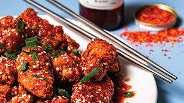

Korean fried chicken, usually called chikin in Korea, refers to a variety of fried chicken dishes created in South Korea, including the basic huraideu-chicken and spicy yangnyeom chicken.
In South Korea, fried chicken is consumed as a meal, an appetizer, anju, or as an after-meal snack.
home
|